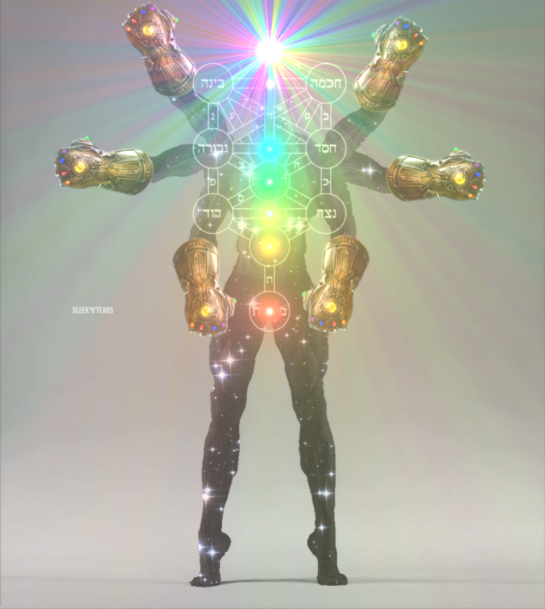

Gigachad
Lore
Gigachad is the epitome of masculinity as he is strong, fair, responsible, kind, compassionate, ispiring, cool, dashing,and of course a CHAD.

Gigachad appeared out of no where. He just appeared and asserted dominance over the beta males. Gigachad indulges in many activities that take up his time. Like sports, gaming, gardening, farming, space travel, dimension hopping, showing people how to become giga, cleaning up irresponsible people's messes, and helping all innocent people. Gigachad is the evoled version of the chad from 2010 rage comics. He has broken out of his cacoon and evolved from a chad to a Gigachad. He not only works on himself but also helps entire dimension's problems and turns them GIGA. Gigachad is truly a CHAD.
Power level
Gigachad is the peak of masculinity. He is the very living definition of it. This allows him to do anything GIGA. An example is taking the groceries in one trip this can apply to anything. Another example is to gigafy anyone thats not chill like that like a Eugene. Since Gigachad is a chad he has unlimited strength and physical attribrutes. He is also a rizz god meaning he can pull any woman since he is the peak of masculinity. Gigachad is also smart since he cares about his studies to make his parents proud since thats a chad move. Gigachad fights strong enemies that don't have good intentions like the personification of pain and suffering. This feat makes him multidimensial as hurting beings in higher dimensions is insane. Gigachad's strongest form ULTRA 12 DIMENSIONAL OMEGA GIGA CHAD(a.k.a Gigagod) makes him into a 12 dimensional omniscient chad that is basically a god.
Stats
- Strength: S+
- Speed: S+
- Durability: S+
- Endurance: S+
- Intelligence: A+
- Creativity: A
- Resourcefulness: A
- Hacks: S+
Gigachad scores a 48/52
Home